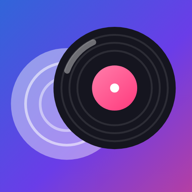

Melodi Mix
Kullanım kılavuzu
Uygulamada dört sekme var: Ana sayfa, Ara, Müziğim ve DJ. Ayarlar sağ üstteki dişli simgesinde.
Ana sayfa ve YouTube
- Trend, Radyo, Shorts'ta bu hafta, Günün klipleri, Top 100 Klip ve Top 100 Şarkı listeleri; ülke düğmeleriyle (Türkiye, Dünya, ABD…) değişir.
- Filtrele: tür, çıkış tarihi ve sıralama. Tümünü çal: listeyi sırayla oynatır.
- Her videoda: oynat, tam ekran, müzik modu ve Çalma listesine ekle. Çalma listeleri yalnızca telefonda saklanır.
- Alttaki oynatıcı çubuğu: nota düğmesi müzik modu (küçük video), kamera düğmesi videoyu tam genişlikte büyütür.
- YouTube kuralları gereği video ekran kilitliyken ya da arka planda çalmaz, indirilemez ve kaydedilemez.
Ara
- YouTube'da arama ve Creative Commons / kamu malı müzik (Audius, Internet Archive, Openverse).
- Lisansı izin veren parçaları İNDİR ile telefona kaydedebilir, DJ'de çalabilirsin.
- 14 ülkenin ve dünyanın radyoları; ekran kapalıyken de çalar, kilit ekranından yönetilir.
Müziğim
- Telefonum: telefondaki şarkılar; arama, çalma, “Sıradaki olarak çal” ve “DJ kitaplığına ekle”.
- Çalma listeleri, indirilenler ve mix kayıtların burada.
DJ: deck'ler
- 4 deck: Deck 1–2 Main Mix, Deck 3–4 Creative Mix; ikisi de Master'a gider. Tablette 4 deck yan yana.
- MÜZİK EKLE ile kitaplığa parça ekle, deck'e dokunarak yükle. Parçalar otomatik analiz edilir: BPM, ton (Camelot), enerji.
- CUE: başlangıç noktası, ▶: çal/duraklat, SYNC: tempoyu ve vuruşu öbür deck'e eşitler. Tempo kaydırıcısı hızı değiştirir.
- Dalga formuna dokun ya da sürükle: o konuma atlar. Çizgiler 16 vuruşluk bölümleri gösterir.
- Hot cue: boşken dokun = kaydet, doluyken = atla, basılı tut = sil. Loop: 1–32 vuruş, vuruşa kilitli.
Mikser ve efektler
- Mikser: crossfader, kanal seviyeleri, 3 bantlı EQ (bas, orta, tiz) ve filtre. Düğmeleri yukarı/aşağı sürükle, çift dokunma sıfırlar.
- FX: echo (zamanı vuruşa bağlı: 1/4–1), reverb, flanger, phaser ve beat repeat (1/8–1 vuruşluk dilimi tekrarlar; tekrar dokununca kapanır).
- Padler ve Ritim (ritim makinesi): tempoya uyan ses padleri ve davul kalıpları.
- Tüm efektler gerçek ses işler ve kayda girer.
Manuel, Asistan ve Auto DJ
- Manuel: her şey sende. Asistan: Öneri sekmesinde ton, tempo ve enerjiye göre uyumlu sıradaki parçaları gösterir.
- Auto DJ: Main Mix'te (Deck 1+2) parçaları kendisi seçer, vuruşları eşler ve bas geçişiyle mixler. Creative Mix (Deck 3+4) sende kalır.
Parti sırası
- DJ ekranında 🎉 Parti sırası'na dokun; bir QR kodu çıkar.
- Aynı Wi-Fi'deki (ya da telefonunun açtığı erişim noktasındaki) misafirler QR'ı okutur, tarayıcıda açılan sayfadan kitaplığındaki şarkıları ister.
- Auto DJ açıkken istekler sırayla çalar. İstekleri pencereden silebilir, Partiyi bitir ile kapatabilirsin.
- Sayfa yalnızca yerel ağda ve rastgele bir kodla açılır; misafirler yalnızca şarkı adlarını görür, hiçbir şey kaydedilmez.
Mix kaydı
- DJ ekranındaki REC: mix'i olduğu gibi kaydeder (deck'ler, crossfader, efektler, padler). Kayıt sırasında mikslemeye devam et.
- Biçim: MP3, M4A, OGG ya da WAV. Ses doğrudan uygulamanın oynatıcılarından alınır; mikrofon ve ekran kaydı yok.
- YouTube sesi kayda girmez. Kayıtlar Müziğim'de; paylaşabilirsin.
Ayarlar
- Tema (Klasik mavi, Klasik gece, Gün ışığı, Gece, Plak), dil (Türkçe, English, Deutsch), kaynaklar ve hesaplar, geri bildirim.
- Bazı DJ özellikleri (Auto DJ, Asistan, gelişmiş efektler, kayıt) Pro'dur; reklamlar açıkken ödüllü reklam izleyerek süreli açılır.
Sık sorulanlar
- Ekran kilitlenince YouTube neden duruyor?
- YouTube kuralları videonun görünür olmasını şart koşuyor. Telefon müziği, radyo ve DJ kilitliyken de çalar.
- YouTube'dan indirme ya da DJ'e yükleme var mı?
- Hayır, YouTube buna izin vermiyor. DJ'de telefon müziğini ve lisanslı (CC) parçaları kullan.
- Parti sırası açılmıyor.
- Telefonun Wi-Fi'ye bağlı olmalı ya da erişim noktası açık olmalı; misafirler aynı ağda olmalı.
User guide
The app has four tabs: Home, Search, My music and DJ. Settings are under the gear icon at the top right.
Home and YouTube
- Trending, Radio, Shorts this week, Today's videos, Top 100 videos and Top 100 songs; the country buttons (Turkey, World, USA…) switch the charts.
- Filter: genre, release date and sorting. Play all: plays the list in order.
- Each video: play, full screen, music mode and Add to playlist. Playlists are stored only on your phone.
- Player bar at the bottom: the note button is music mode (small video), the camera button enlarges the video to full width.
- Under YouTube's rules, videos don't play with the screen locked or in the background, and can't be downloaded or recorded.
Search
- Search YouTube and Creative Commons / public domain music (Audius, Internet Archive, Openverse).
- Tracks whose license allows it can be saved with DOWNLOAD and played in the DJ.
- Radio stations from 14 countries and the world; they keep playing with the screen off and are controlled from the lock screen.
My music
- My phone: the songs on your phone; search, play, “Play next” and “Add to DJ library”.
- Your playlists, downloads and mix recordings are here.
DJ: decks
- 4 decks: Deck 1–2 Main Mix, Deck 3–4 Creative Mix, both routed to the master. All 4 decks side by side on tablets.
- Add tracks with ADD MUSIC and tap a deck to load them. Tracks are analysed automatically: BPM, key (Camelot), energy.
- CUE: cue point, ▶: play/pause, SYNC: matches tempo and beat to the other deck. The tempo slider changes speed.
- Tap or drag the waveform to jump. Lines mark 16-beat sections.
- Hot cue: tap when empty = save, when set = jump, long press = delete. Loop: 1–32 beats, beat-locked.
Mixer and effects
- Mixer: crossfader, channel levels, 3-band EQ (low, mid, high) and filter. Drag knobs up/down; double tap resets.
- FX: echo (beat-synced time: 1/4–1), reverb, flanger, phaser and beat repeat (repeats a 1/8–1 beat slice; tap again to stop).
- Pads and Beats (drum machine): tempo-matched sound pads and drum patterns.
- All effects are real audio processing and are recorded.
Manual, Assist and Auto DJ
- Manual: you're in control. Assist: the Idea tab shows compatible next tracks by key, tempo and energy.
- Auto DJ: picks tracks on the Main Mix (Deck 1+2), matches beats and mixes with a bass swap. The Creative Mix (Deck 3+4) stays yours.
Party queue
- Tap 🎉 Party queue on the DJ screen; a QR code appears.
- Guests on the same Wi-Fi (or your phone's hotspot) scan it and request songs from your library in their browser.
- With Auto DJ on, requests play in order. Remove requests in the window, or close it with End party.
- The page works only on the local network with a random code; guests see only song titles and nothing is stored.
Mix recording
- REC on the DJ screen records the mix as you hear it (decks, crossfader, effects, pads). Keep mixing while recording.
- Formats: MP3, M4A, OGG or WAV. Audio comes straight from the app's players; no microphone or screen recording.
- YouTube audio is never recorded. Recordings are in My music and can be shared.
Settings
- Theme (Classic blue, Classic night, Daylight, Night, Vinyl), language (Türkçe, English, Deutsch), sources and accounts, feedback.
- Some DJ features (Auto DJ, Assist, advanced effects, recording) are Pro; while ads are on they unlock for a while after rewarded ads.
FAQ
- Why does YouTube stop when the screen locks?
- YouTube's rules require the video to stay visible. Phone music, radio and the DJ keep playing.
- Can I download YouTube videos or load them into the DJ?
- No, YouTube doesn't allow it. Use your phone's music and licensed (CC) tracks in the DJ.
- The party queue doesn't open.
- Your phone must be on Wi-Fi or have its hotspot on, and guests must be on the same network.
Benutzerhandbuch
Die App hat vier Tabs: Start, Suche, Meine Musik und DJ. Die Einstellungen findest du oben rechts unter dem Zahnrad.
Start und YouTube
- Trends, Radio, Shorts der Woche, Videos des Tages, Top 100 Videos und Top 100 Songs; die Länderknöpfe (Türkei, Welt, USA…) wechseln die Charts.
- Filtern: Genre, Erscheinungsdatum und Sortierung. Alle abspielen: spielt die Liste der Reihe nach.
- Bei jedem Video: abspielen, Vollbild, Musikmodus und Zur Playlist hinzufügen. Playlists bleiben nur auf deinem Handy.
- Player-Leiste unten: Die Noten-Taste ist der Musikmodus (kleines Video), die Kamera-Taste vergrößert das Video auf volle Breite.
- Nach den YouTube-Regeln laufen Videos nicht bei gesperrtem Bildschirm oder im Hintergrund und können nicht heruntergeladen oder aufgenommen werden.
Suche
- Suche auf YouTube und nach Creative-Commons- / gemeinfreier Musik (Audius, Internet Archive, Openverse).
- Titel, deren Lizenz es erlaubt, speicherst du mit LADEN und spielst sie im DJ.
- Radiosender aus 14 Ländern und der Welt; sie laufen auch bei ausgeschaltetem Bildschirm und lassen sich vom Sperrbildschirm steuern.
Meine Musik
- Mein Telefon: die Songs auf deinem Handy; suchen, abspielen, „Als Nächstes abspielen“ und „Zur DJ-Bibliothek hinzufügen“.
- Hier sind deine Playlists, Downloads und Mix-Aufnahmen.
DJ: Decks
- 4 Decks: Deck 1–2 Main Mix, Deck 3–4 Creative Mix, beide gehen auf den Master. Auf Tablets alle 4 Decks nebeneinander.
- Mit MUSIK HINZUFÜGEN Titel hinzufügen, durch Tippen auf ein Deck laden. Titel werden automatisch analysiert: BPM, Tonart (Camelot), Energie.
- CUE: Cue-Punkt, ▶: Play/Pause, SYNC: gleicht Tempo und Beat an das andere Deck an. Der Tempo-Regler ändert die Geschwindigkeit.
- Wellenform antippen oder ziehen: springt zu dieser Stelle. Linien markieren 16-Takt-Abschnitte.
- Hot Cue: leer antippen = speichern, belegt = springen, lange drücken = löschen. Loop: 1–32 Schläge, taktgenau.
Mixer und Effekte
- Mixer: Crossfader, Kanalpegel, 3-Band-EQ (Bass, Mitten, Höhen) und Filter. Regler nach oben/unten ziehen; Doppeltippen setzt zurück.
- FX: Echo (taktgenaue Zeit: 1/4–1), Hall, Flanger, Phaser und Beat Repeat (wiederholt ein Stück von 1/8–1 Schlag; erneut tippen beendet).
- Pads und Beats (Drumcomputer): tempopassende Sound-Pads und Drum-Patterns.
- Alle Effekte sind echte Audiobearbeitung und werden mit aufgenommen.
Manuell, Assistent und Auto DJ
- Manuell: du hast alles in der Hand. Assistent: Der Tab Idee zeigt passende nächste Titel nach Tonart, Tempo und Energie.
- Auto DJ: wählt im Main Mix (Deck 1+2) die Titel, gleicht die Beats an und mischt mit Bass-Swap. Der Creative Mix (Deck 3+4) bleibt bei dir.
Party-Warteschlange
- Tippe im DJ-Bildschirm auf 🎉 Party-Warteschlange; ein QR-Code erscheint.
- Gäste im selben WLAN (oder in deinem Hotspot) scannen ihn und wünschen sich im Browser Songs aus deiner Bibliothek.
- Mit Auto DJ laufen die Wünsche der Reihe nach. Wünsche im Fenster entfernen oder mit Party beenden schließen.
- Die Seite funktioniert nur im lokalen Netz mit einem Zufallscode; Gäste sehen nur Songtitel, nichts wird gespeichert.
Mix-Aufnahme
- REC im DJ-Bildschirm nimmt den Mix so auf, wie du ihn hörst (Decks, Crossfader, Effekte, Pads). Während der Aufnahme weitermischen.
- Formate: MP3, M4A, OGG oder WAV. Der Ton kommt direkt aus den Playern der App; kein Mikrofon, keine Bildschirmaufnahme.
- YouTube-Ton wird nie aufgenommen. Aufnahmen findest du unter Meine Musik und kannst sie teilen.
Einstellungen
- Design (Klassisch Blau, Klassisch Nacht, Tageslicht, Nacht, Vinyl), Sprache (Türkçe, English, Deutsch), Quellen und Konten, Feedback.
- Einige DJ-Funktionen (Auto DJ, Assistent, erweiterte Effekte, Aufnahme) sind Pro; solange Werbung aktiv ist, werden sie nach Werbung mit Belohnung zeitweise freigeschaltet.
Häufige Fragen
- Warum stoppt YouTube, wenn der Bildschirm sperrt?
- Die YouTube-Regeln verlangen, dass das Video sichtbar bleibt. Handymusik, Radio und der DJ laufen weiter.
- Kann ich YouTube-Videos herunterladen oder in den DJ laden?
- Nein, YouTube erlaubt das nicht. Nutze im DJ deine Handymusik und lizenzierte (CC) Titel.
- Die Party-Warteschlange öffnet sich nicht.
- Dein Handy muss im WLAN sein oder den Hotspot eingeschaltet haben, und die Gäste müssen im selben Netz sein.